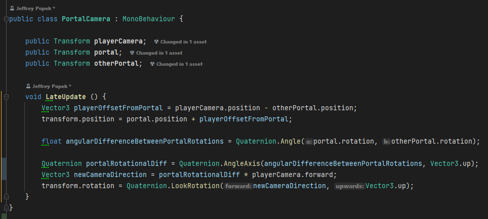
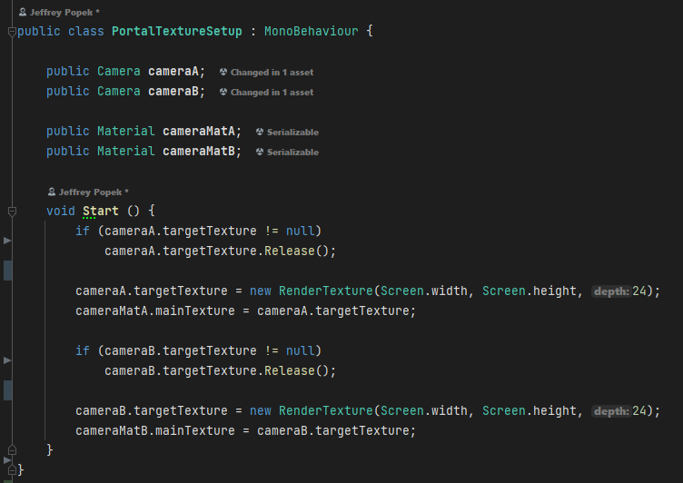
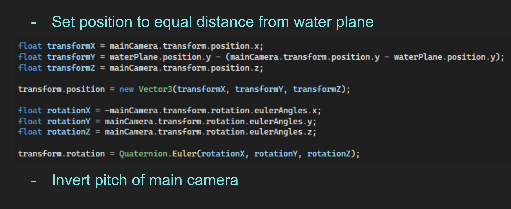
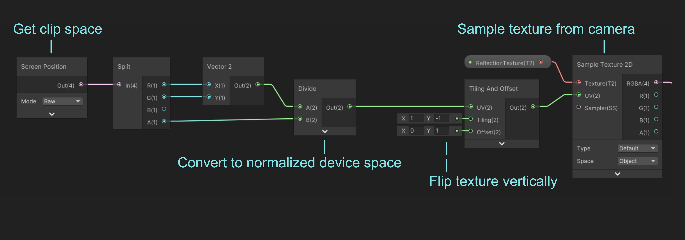
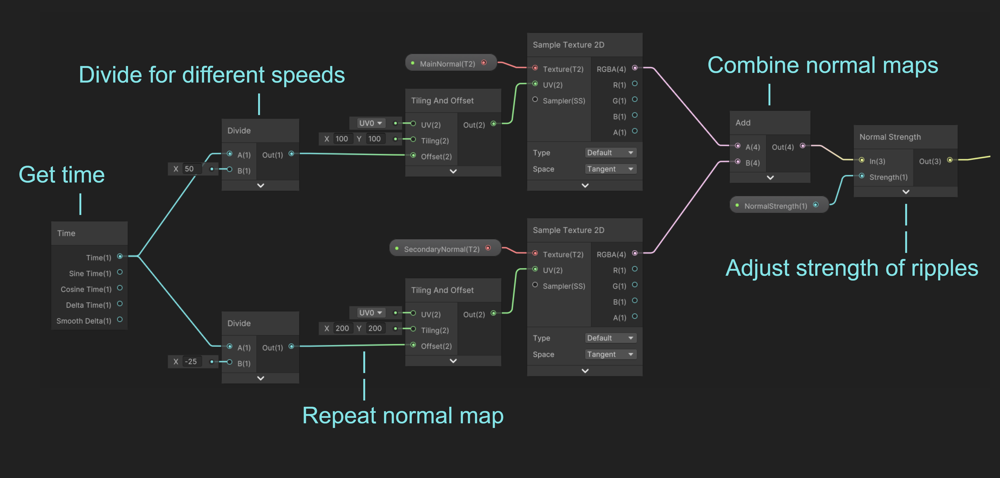
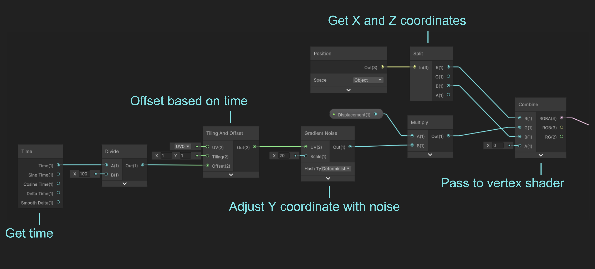

Suzume Portals
The goal of this project was to recreate an effect seen in the Makoto Shinkai film “Suzume”. In the movie there is a Torii gate that leads to another world. Our desired final product would be a scene with an endless pool of water on one side of the gate while a field of grass would be on the other side of the gate.
Technique Breakdown
To get our desired outcome, we need to break this effect into multiple smaller parts. This project combines multiple smaller techniques to create one cohesive scene. When looking at the scene from the movie, we can see there reflective water and a portal to another area. The project started with the creation of a water shader and a portal mechanic that allowed the player to move through. Later other techniques were applied to make the scene look more appealing.

Portals
The first technique that was implemented was portals. To implement portals you need to utilize multiple cameras in a scene and display what another camera is seeing onto a material. The way portals were implemented in this project was to have a camera on the other side of the portal and mirror the player’s actions to be looking out through the other side of the portal and apply that view to a material in the portal.

To show the player being able to look into the portal from any angle, the other portal’s camera needs to mirror the player’s actions. To accomplish this I created a simple script that will take the player’s actions and mirror it on the other camera.

Next we need to apply what this other camera is seeing onto a surface. To do this we can put what the camera sees onto a material. We need our material go be applied to a flat surface, so a plane is perfect for this. The code below is what is being used to put the camera’s viewpoint onto a material.

Now for the most important part of a portal: actually moving through it. To make a portal teleport a player you need two values: the player’s rotation and position. We can set the player’s position in the portal they move through to the same place in our new portal and manually set the player’s rotation to create a teleporting effect. To trigger this we just need to put a trigger collider on the plane we applied our mirror material onto to create a smooth transition to the other side.
Portal Challenges
One of the main challenges when implementing portals was getting a smooth transition for the player and having the reflection work. It took a lot of trial and error to make both effects work together to create a cohesive and smooth effect.
Water
Creating water in games is no easy task, but with the help of unity’s shader graph the process was made much easier. The water in this project had to reflect anything that was above it, so it used a similar technique to portals. Like portals, the water used a second camera that followed the player and put what the second camera saw onto the water plane.

The initial setup of the water shader required another camera to follow the player and main camera. To do this the new camera needed to be equal distance from the water plane and inverted to create the water reflection effect.

To get our reflection we next need to get what the second camera is seeing. To do this we can use shader graph to use the camera as a sample texture for our water plane.

To get ripples in our water we get 2 different offsets for different normal maps and combine them to create the ripple effect.

Finally to get the water to move we need to adjust the coordinates based on an offset and pass it to the vertex shader.

Water Challenges
One of the main challenges with creating the water shader was understanding the camera and where it would need to be to reflect things. To gain a better understanding I compared the knowledge from working on the portals and realized they were essentially the same technique applied in a different way.
Day and Night Cycle
A day and night cycle is one way to make a world feel more alive and that was the goal with its implementation in this project. The cycle is based on an in-game clock that runs much faster than real time and will change to night in only a few minutes. To make this work I applied a skybox to the scene, then was able to change the color values of them in code. In this example I change the sun’s position, the skybox color, and tint based on the time of day.